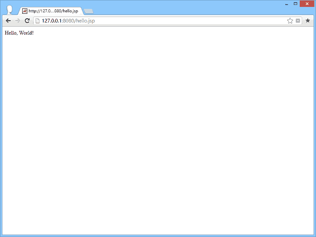

JSP & SQL 快速入門
本文介紹如何搭配 Tomcat 與 MySQL，建立可用 JSP 來練習 SQL 的程式設計環境。
MySQL
MySQL 是最容易安裝與使用的關聯性資料庫伺服器，尤其被 Sun Microsystems 收購後，相當於 Java 家族的成員之一。
下載
請至 https://www.mysql.com 下載 MySQL Community Server，為了方便設定伺服器環境，建議下載 Installer 的版本[1]。
安裝
不要安裝在 C:\Program Files 底下，建議改安裝在 D 槽，避免 Windows 系統保護權限問題，安裝後無法正常啟動 MySQL 服務。
安裝後第一次執行 MySQL 時，會出現設定精靈，過程中，建議設定為「Install As Windows Service」，交由作業系統啟動 MySQL 服務，並且允許帳號可以從遠端登入伺服器。
執行
安裝 MySQL 資料庫伺服器的主要目的，是為了從外部操作環境（例如 JDK 或 Tomcat）登入伺服器，來存取 MySQL 內部資料，因此應用上比較沒有「如何執行 MySQL」的問題。只要將 MySQL 啟動為 Windows 的「服務」即可。
但你還是可以透過 MySQL Command Line Clent 來輸入 SQL 指令，直接從 MySQL 內部操作資料庫。
Connector/J
要讓 Java 操作 MySQL，你必須下載一種叫做 JDBC 的驅動程式。
下載
請至 https://dev.mysql.com/downloads/connector/j/ 下載 Connector/J。
安裝
解壓後，將 mysql-connector-java-5.1.22-bin.jar 放到 Tomcat 所在資料夾底下的 lib 資料夾，然後重新啟動 Tomcat。
5.1.22 是版本號碼，視年份日期而有不同。
Hello, world!
建立程式檔案
請建立一份純文字文件，檔名為 hello.jsp，然後丟到 Tomcat 所在資料夾的 webapps 資料夾的 ROOT 資料夾裡面[2]。
程式碼
在 hello.jsp 文件裡面，輸入如下程式碼：
執行程式
開啟瀏覽器，輸入如下網址：
https://127.0.0.1:8080/hello.jsp
順利的話，輸出結果如下：

但是這個範例重新整理的話，會顯示 ERROR，因為重複建立名為 mytable 的資料表。
你必須用 MySQL 的 Command Line Client 輸入：
DROP TABLE mytable
將資料表刪除，才能再執行成功一次。
在 JSP 使用 SQL 指令
Java 使用 java.sql.Statement 提供的三個方法來操作 SQL 指令：
java.sql.Statement
| executeUpdate("SQL 指令") | 用來操作 INSERT、DELETE、UPDATE 指令。 |
| executeQuery("SQL 指令") | 用來操作 SELECT 指令。 |
| execute("SQL 指令") | 其它 SQL 指令。 |
在 JSP 取用 SQL 資料
Java 使用 java.sql.ResultSet 來保存 java.sql.Statement.executeQuery() 所傳回 SELECT 指令的資料，讓我們在程式中可以更靈活操作資料。
ResultSet 提供的操作方式
| getRow() | 取得游標位置 |
| next() | 向下移動游標 |
| previous() | 向上移動游標 |
| relative(int) | 上下移動游標，以正負值控制。 |
| absolute(int) | 設置游標位置。 |
| beforFirst() | 游標移到最前一筆的位置。 |
| afterLast() | 游標移到最後一筆的位置。 |
| first() | 游標移到資料開始的位置。 |
| last() | 游標移到資料結束的位置。 |
| isBeforFirst() | 游標是否在最前一筆的位置。 |
| isAfterLast() | 游標是否在最後一筆的位置。 |
| ifFirst() | 游標是否在資料最開始的位置。 |
| ifLast() | 游標是否在資料已結束的位置。 |
| deleteRow() | 刪除欄位資料。 |
| refreshRow() | 更新前的資料。 |
| getFetchSize() | 取得可包含最大資料筆數。 |
但在那之前，你必須知道 java.sql.Connection 的 createStatement() 可接受 resultSetType 和 resultSetConcurrency 兩個參數，前者用來設定游標的移動方式，後者用來設定資料是否可以改寫。
經過適當的設定，才有辦法使用前面所列的功能。
ResultSet 的 resultSetType 常數
| TYPE_FORWARD_ONLY | 游標只能向下移動。 |
| TYPE_SCROLL_INSENSITIVE | 游標可上下移動，當其它 ResultSet 搬動資料時同步影響游標位置。 |
| TYPE_SCROLL_SENSITIVE | 游標可上下移動，當其它 ResultSet 搬動資料時不影響游標位置。 |
ResultSet 的 resultSetConcurrency 常數
| CONCUR_READ_ONLY | ResultSet 的資料唯讀。 |
| CONCUR_UPDATABLE | ResultSet 的資料可更改。 |